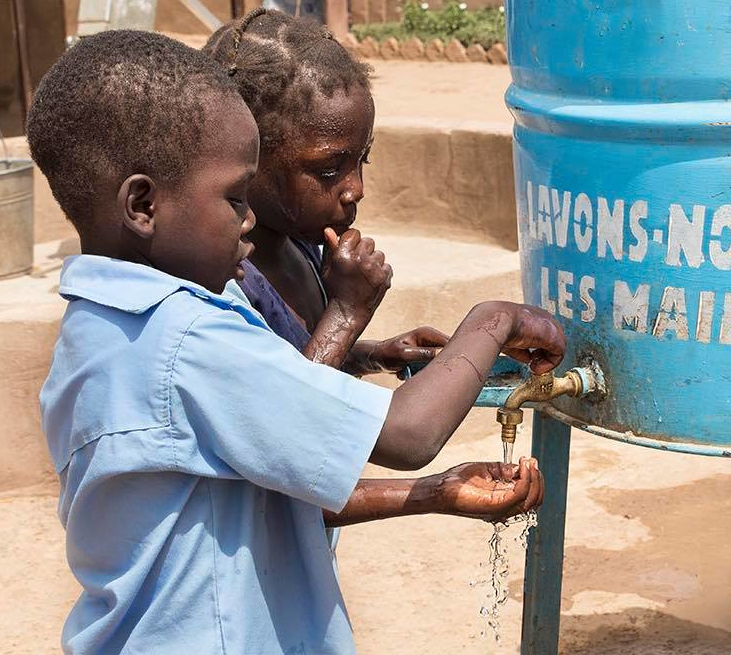

Kézmosás Projekt
2018-ban a Xeless finanszírozásával és a WET Program eszközeivel sikeresen eljuttattuk a Kézmosás Programot a Chérifoula iskolába. Ez tartalmazta az iskolai WC-k felújítását, egy kézmosó állomás beszerelését, valamint a gyerekek oktatását a kézmosás fontosságáról.
2019-ben elvisszük a Kézmosás Programot a másik támogatott iskolánkba, a Győztesek Iskolájába is.
Ez az iskola már 5 éve működik WC-k nélkül. Ahogy a gyerekek száma folyamatosan nő,ez a szituáció egyre nagyobb problémát okoz. Ebben az évben az iskola alapítója, M. Guindo belekezdett a mosdók építésébe.
Felajánlottuk, hogy finanszírozzuk a négy WC fülke megépítését, (egyenlőre csak betonból) és egy kiválasztott hely kialakítását víztárolóval és csappal, hogy a gyerekek kezet moshassanak WC-használat után. A tároló minden reggel fel lesz töltve a közeli kútból.
A WC-k jelenlegi állapota körbekerítésre várva:

A tervezett kézmosó rész így nézne ki:
Amint a helyiségek építése készen lesz, felajánljuk a Kézmosás Programot a gyerekeknek az iskolában. A kampány részeként önkéntesünk interaktív beszélgetést tart arról, hogy miért, hogyan, és mikor fontos kezet mosni. A tavalyi programhoz hasonlóan idén is lesznek interaktív játékok, dalok és egyszerűsített tudományos magyarázatok. Az órák alatt beszélgetünk a kézmosás fontosságáról és a higiéniáról.